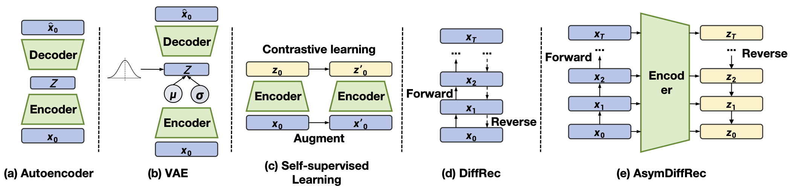
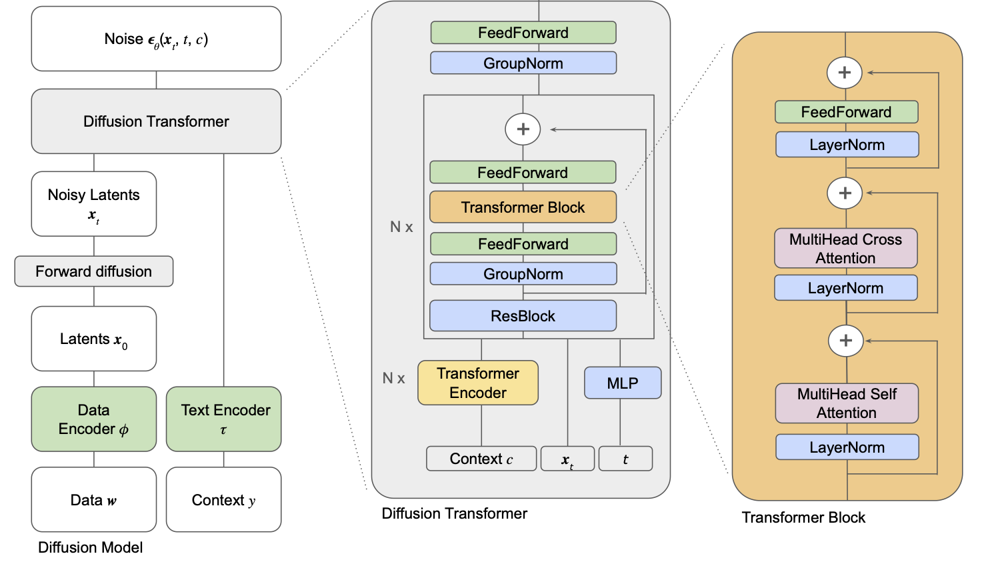
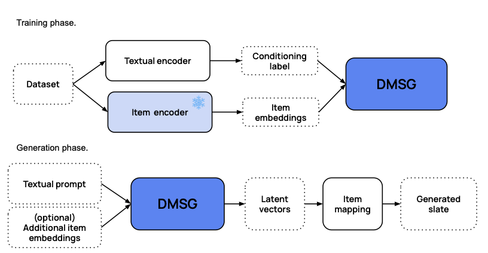

9.3. 特征增强与多样性优化¶
上一节介绍了扩散模型在数据增强方面的应用，通过生成伪交互数据来缓解数据稀疏和冷启动问题。本节将从另外两个角度探讨扩散模型在推荐系统中的实际价值：特征增强和多样性优化。
在工业推荐系统中，特征缺失是一个普遍存在的问题，用户画像不完整、物品属性缺失等情况时常发生，直接影响模型的预测质量。另一方面，推荐结果的多样性不足会导致用户体验下降，传统的确定性推荐方法往往倾向于推荐相似的内容。扩散模型为这两个问题提供了新的思路：其去噪过程天然适合处理不完整的输入信息，而其随机采样机制则为推荐多样性提供了内在支持。
本节将介绍两种已在线上部署的方法：AsymDiffRec (Zhu et al., 2025) 通过不对称扩散过程实现特征补全，DMSG (Tomasi et al., 2025) 利用条件扩散模型生成多样化的推荐列表。
9.3.1. 特征增强：AsymDiffRec¶
已有的扩散推荐方法（如DiffRec (Wang et al., 2023)）通常沿用计算机视觉中的标准做法，在对称的前向和反向过程中使用高斯噪声。然而，这种设计在推荐场景中存在两个问题：
离散数据空间的不匹配。推荐系统的输入特征大多是离散的（如用户ID、性别、物品类别等），与图像的连续像素信号有本质区别。对离散特征的潜在表示添加连续高斯噪声，得到的加噪表示并不能代表另一个真实样本。换言之，对高斯噪声的鲁棒性并不等同于对推荐场景中实际噪声的鲁棒性。
个性化信息的损失。标准扩散模型在对称的前向和反向过程中添加并重建高斯噪声，这可能导致模型过度关注噪声的重建，而忽略了对个性化信息的保留。然而，个性化信息正是推荐系统最核心的学习目标。
AsymDiffRec (Zhu et al., 2025) 针对这两个问题，提出了一种不对称扩散推荐模型。其核心设计包括：在前向过程中使用离散的特征dropout替代高斯噪声，在反向过程中从原始特征空间切换到潜在表示空间，并通过任务导向的辅助损失保留个性化信息。
离散前向过程
与标准扩散模型使用高斯噪声不同，AsymDiffRec的前向过程在原始特征空间中执行离散操作。
给定包含 \(N\) 个特征的输入样本 \(\mathbf{x}_0 = \{x_1, x_2, \ldots, x_N\}\)，前向过程执行 \(T\) 步特征dropout，每一步随机丢弃一个特征，得到加噪序列 \(\{\mathbf{x}_1, \mathbf{x}_2, \ldots, \mathbf{x}_T\}\)。其中扩散步数 \(T\) 从均匀分布 \(\text{Uniform}(0, N)\) 中随机采样。
这一设计的关键在于：经过 \(T\) 步前向过程后，得到的 \(\mathbf{x}_T\) 是一个缺失了 \(T\) 个特征的样本。这与推荐系统中常见的特征缺失问题高度一致：在实际线上系统中，由于数据采集不完整、用户隐私设置、特征服务故障等原因，大量样本的特征是不完整的。因此，相比于添加高斯噪声，特征dropout作为前向过程的“噪声”更贴合推荐场景的实际情况。
不对称反向过程
AsymDiffRec的一个关键创新在于反向过程与前向过程不在同一个空间中进行。前向过程在原始特征空间中操作（dropout特征），而反向过程则直接在潜在表示空间中完成去噪。
具体而言，设特征提取器为 \(h(\cdot)\)，包含嵌入层和深度网络。对于加噪样本 \(\mathbf{x}_T\)，首先提取其潜在表示 \(\mathbf{z}_T = h(\mathbf{x}_T)\)。去噪函数 \(g(\cdot)\) 以 \(\mathbf{z}_T\) 和一个步长嵌入 \(\mathbf{s}\) 为输入，生成去噪后的表示：
其中步长嵌入 \(\mathbf{s} = [0, 1, 1, \ldots, 0, 1]\) 是一个二值向量，\(1\) 表示对应位置的特征缺失。这个步长嵌入为去噪函数提供了缺失特征的位置信息，有助于模型学习有针对性的特征补全。
反向过程的训练通过重建损失来驱动：
其中 \(\mathbf{z}_0 = h(\mathbf{x}_0)\) 是完整样本的潜在表示。通过最小化这个损失，去噪函数学会从缺失特征的表示中恢复完整表示。
这种不对称设计的优势在于：如果在原始特征空间中执行反向过程（重建缺失的原始特征），再将重建结果送入特征提取器，会经历两次信息损失（反向重建 + 特征提取）。直接在潜在空间中进行反向过程可以避免这个问题，因为推荐模型最终使用的正是潜在表示。
任务导向的辅助损失
仅使用重建损失可能不足以保证去噪后的表示保留足够的个性化信息。为此，AsymDiffRec引入了一个辅助的任务导向损失，直接基于去噪后的表示进行预测：
其中 \(f(\cdot)\) 是预测头，\(y\) 是真实标签。这个损失确保去噪后的表示不仅在L2距离上接近完整表示，而且在下游预测任务上也能保持良好的性能。
整体框架
{kind=link}

图9.3.1 AsymDiffRec与已有方法的对比。(a) 自编码器从潜在向量恢复原始表示；(b) 变分自编码器引入随机性；(c) 自监督方法通过数据增强学习鲁棒表示；(d) DiffRec使用对称的高斯噪声扩散过程；(e) AsymDiffRec使用离散前向过程和不对称的潜在空间反向过程。¶
AsymDiffRec的训练和推理流程如下：
训练阶段:
从均匀分布 \(\text{Uniform}(0, N)\) 中采样扩散步数 \(T\)
通过离散前向过程（特征dropout）得到加噪样本 \(\mathbf{x}_T\)
通过不对称反向过程计算去噪表示 \(\mathbf{z}_0'\)
联合优化三个损失：\(\mathcal{L} = \mathcal{L}_{\text{main}} + \mathcal{L}_{\text{recon}} + \mathcal{L}_{\text{aux}}\)
其中 \(\mathcal{L}_{\text{main}}\) 是基于完整样本的主任务损失。
推理阶段：与大多数扩散推荐方法不同，AsymDiffRec在推理阶段也使用扩散模块。在线上推理时，输入样本 \(\mathbf{x}_0\) 通常存在特征缺失，可以直接将其视为前向过程产生的“加噪样本”。通过步长嵌入 \(\mathbf{s}\) 标记缺失特征的位置，然后用去噪函数生成补全后的表示：
这个去噪后的表示用于最终的预测。由于去噪函数是一个简单的两层神经网络，对推理延迟的影响很小。
AsymDiffRec在工业数据集上的离线实验中，相比基线模型在AUC上取得了+0.1%的相对提升，在UAUC上取得了+1.68%的相对提升，均优于CDAE、MultiVAE、自监督学习和DiffRec等对比方法。消融实验表明，重建损失和辅助任务损失缺一不可：去掉辅助任务损失后，AUC甚至低于基线模型，说明保留个性化信息对于推荐任务至关重要。
9.3.2. 多样性优化：DMSG¶
在音乐播放列表、电商商品套装等场景中，推荐系统需要生成一组物品（称为slate），供用户整体消费。与传统的逐个物品排序不同，slate生成需要考虑物品之间的协调性和整体质量。这带来了组合优化的挑战：从一个可能包含数百万物品的目录中选择一组相互协调的物品，候选组合的数量呈指数级增长。
传统方法通常假设用户只与slate中的一个物品交互，从而将问题简化为单物品推荐。但在播放列表和商品套装等场景中，用户通常会消费slate中的大部分内容，这一假设并不成立。此外，传统的检索和排序方法是确定性的，对于相同的输入总是返回相同的结果，缺乏多样性。
DMSG (Tomasi et al., 2025)（Diffusion Model for Slate Generation）将slate生成建模为一个条件生成问题，利用扩散模型从文本prompt直接生成完整的物品slate。
DMSG包含三个核心组件：
编码模块（Encoding Module）
将离散的物品序列映射到连续的潜在空间。给定一个slate \(\mathbf{w} = [w_1, w_2, \ldots, w_n]\)，其中每个 \(w_i\) 是目录 \(\mathcal{V}\) 中的一个物品，通过嵌入函数 \(\phi\) 将其转换为连续表示：
DMSG采用预训练的固定编码器，不与扩散模型联合训练，这样可以提高训练稳定性，并且当物品目录更新时只需更新编码器映射而无需重新训练扩散模型。
条件模块（Conditioning Module）
将文本prompt编码为条件向量。使用一组Transformer编码层将输入文本 \(y\) 映射为上下文表示 \(\mathbf{c} = \tau(y)\)，通过交叉注意力机制注入到扩散过程中。
扩散过程模块（Diffusion Process Module）
核心的生成模块，基于条件扩散过程。前向过程对slate的潜在表示逐步加噪，反向过程则在条件 \(\mathbf{c}\) 的引导下从噪声中恢复slate。去噪网络采用Transformer架构（称为diffusion transformer），通过交叉注意力机制融合上下文条件。
{kind=link}

图9.3.2 模型细节。核心模块是一个Diffusion Transformer，用于预测添加到潜在变量的噪声。在推理时，用于去噪一个潜空间向量。¶
在第一节中，我们介绍了去噪网络的两种常见参数化方式：预测噪声 \(\boldsymbol{\epsilon}\) 和预测原始数据 \(\mathbf{x}_0\)。DMSG采用了第三种参数化方式：v-prediction (Salimans and Ho, 2022)，即预测“速度”（velocity）\(\mathbf{v}\)。其定义为噪声和数据的线性组合：
其中 \(\alpha_t = \sqrt{\bar{\alpha}_t}\)，\(\sigma_t = \sqrt{1 - \bar{\alpha}_t}\)。从 \(\mathbf{v}\) 可以反推出原始数据 \(\hat{\mathbf{x}}_0 = \alpha_t \mathbf{x}_t - \sigma_t \hat{\mathbf{v}}_\theta\) 和噪声 \(\hat{\boldsymbol{\epsilon}} = \sigma_t \mathbf{x}_t + \alpha_t \hat{\mathbf{v}}_\theta\)。预测 \(\mathbf{v}\) 相比直接预测 \(\boldsymbol{\epsilon}\) 或 \(\mathbf{x}_0\) 的优势在于：其对应的损失权重为“SNR+1”，在高信噪比和低信噪比区域都能给予合理的梯度，训练更加稳定。基于v-prediction的训练损失为：
{kind=link}

图9.3.3 DMSG的训练和推理阶段。¶
生成与解码
在推理时，给定文本prompt \(y\)，DMSG的生成过程如下：
编码prompt：\(\mathbf{c} = \tau(y)\)
从标准高斯分布采样初始噪声：\(\mathbf{x}_T \sim \mathcal{N}(\mathbf{0}, \mathbf{I})\)
迭代执行条件去噪，每一步计算：
其中预测的原始样本为 \(\hat{\mathbf{x}}_0 = \sqrt{\bar{\alpha}_t}\mathbf{x}_t - \sqrt{1-\bar{\alpha}_t}\mathbf{v}_\theta(\mathbf{x}_t, t, \mathbf{c})\)。
将最终的连续表示 \(\mathbf{x}_0\) 通过Rounding操作转换为离散物品序列。对于每个位置，找到嵌入空间中最近的物品作为输出。
为满足线上推荐系统的延迟要求，DMSG采用DDIM (Song et al., 2020) 加速采样，将推理步数从训练时的上千步减少到50步，在保持生成质量的同时将单次生成的延迟控制在毫秒级别。
多样性分析
DMSG在推荐多样性方面具有天然优势，这源于扩散模型的随机采样机制。具体体现在两个方面：
物品流行度分布。与BM25等确定性检索方法相比，DMSG倾向于推荐流行度更低的物品。确定性方法在评分时容易偏向高频物品，而扩散模型在连续潜在空间中的随机采样使得低流行度但语义相关的物品也有机会被选中。
生成结果的新鲜度。对于相同的prompt，DMSG每次生成的slate都不同，但保持相近的质量水平。实验表明，多次生成的结果在BERTScore上保持稳定（约0.8），同时每次都会包含大量新物品。这意味着即使用户反复请求相同的内容主题，每次获得的推荐列表也是不同的，有助于内容发现和用户留存。
本节介绍的两种方法展示了扩散模型在推荐系统中除数据增强之外的应用价值。AsymDiffRec通过将特征dropout作为前向过程的“噪声”，将扩散模型的去噪能力转化为特征补全能力，解决了工业推荐中普遍存在的特征缺失问题。DMSG则利用扩散模型的随机采样特性，在保证推荐相关性的同时提升了内容多样性和新鲜度。两者的共同点在于针对推荐场景的实际需求对扩散过程进行了针对性的改造，而非简单套用图像生成的范式。